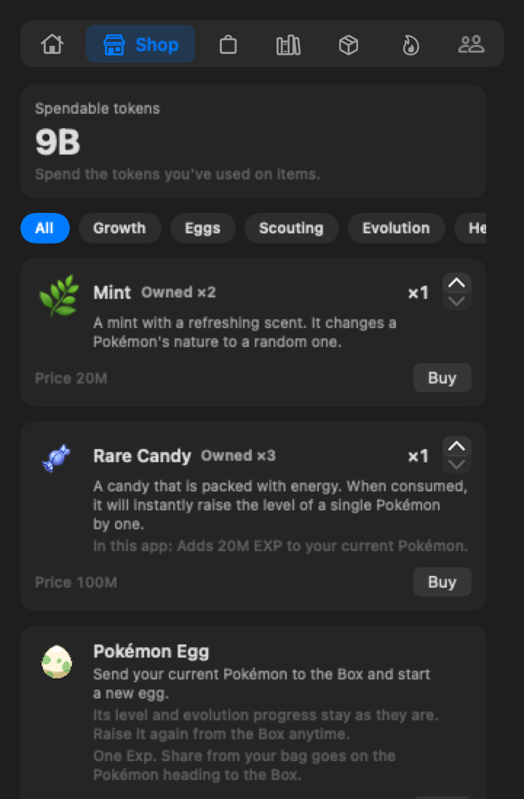
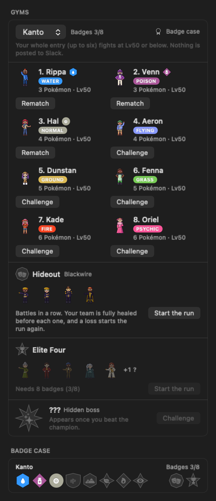
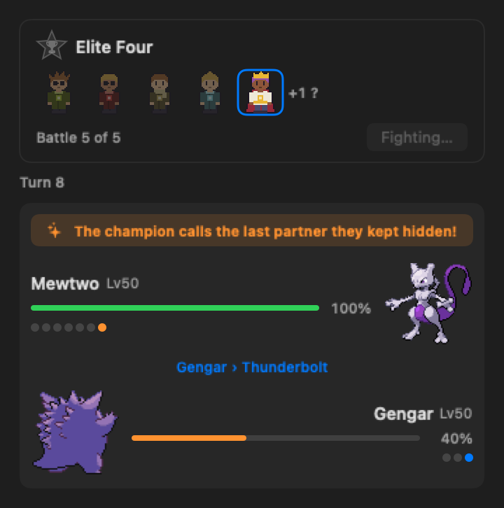
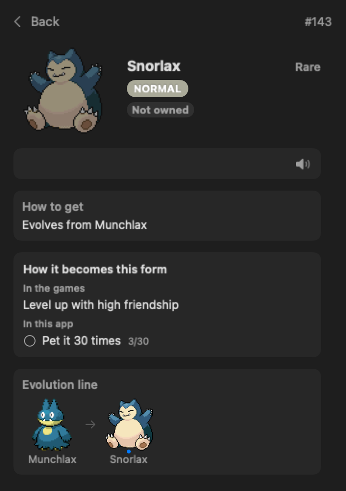
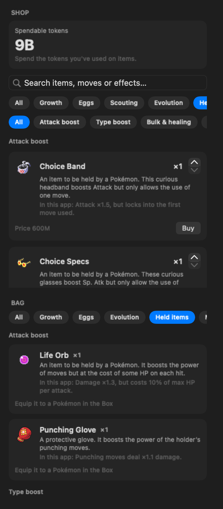
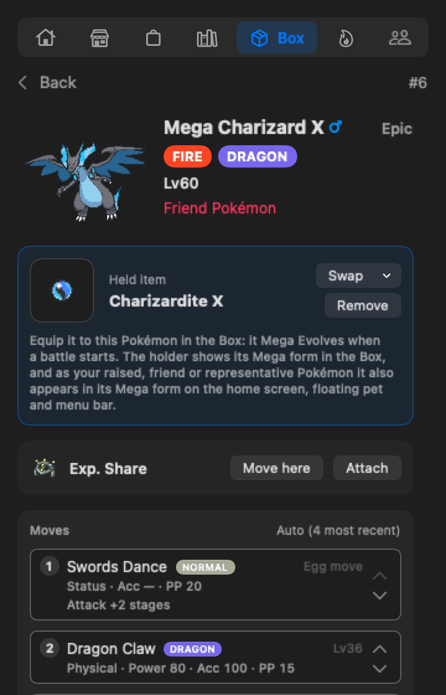
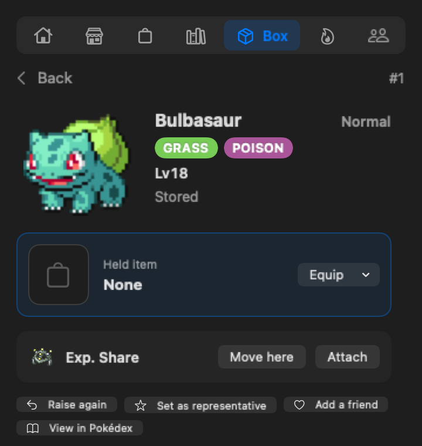

Grow with your AI coding
Every token your coding agents use counts, cache reads included. The same tokens fill your Shop wallet.
Suits heavy agent users.
A Pokémon that grows as you code. Track your AI token usage and limits, right from your Mac’s menu bar.
Free · macOS 14+ · Apple Silicon
The tokens you already use become progress. Your usual workflow, with a little company.

You’ll need an Apple Silicon Mac with macOS 14 or later. No AI coding tool? Time mode grows your partner while you work. No PokeTokenBar account needed.
Release notescurl -L https://github.com/w8385/PokeTokenBar-yp/releases/latest/download/PokeTokenBar-yp-arm64.zip -o /tmp/PokeTokenBar-yp.zip && ditto -x -k /tmp/PokeTokenBar-yp.zip /Applications && xattr -dr com.apple.quarantine /Applications/PokeTokenBar.app && open /Applications/PokeTokenBar.appUnzip PokeTokenBar-yp-arm64.zip and move PokeTokenBar.app into Applications.
The app is self-signed. If macOS blocks the first launch, follow the Gatekeeper steps in the installation guide. The Terminal command clears the quarantine attribute for you.
Open installation guideThe tokens you use with AI coding tools hatch an egg and grow your partner. Keep coding, watch it evolve, and keep each graduated Pokémon in your collection.

Your first tokens bring you closer to hatching.

An egg hatches into a surprise Pokémon.

Used tokens advance its evolution line.

Graduate your partner and welcome a new egg.
Illustration: Bulbasaur’s evolution line. Your partner and growth pace vary. No extra AI requests are made to grow a Pokémon.
Choose the growth source in Settings and switch any time. Progress you have already banked stays the same in both modes.
Every token your coding agents use counts, cache reads included. The same tokens fill your Shop wallet.
Suits heavy agent users.
Suits light users, or anyone without an AI coding tool.
No token usage for 3 days? The app suggests time mode in Settings.
In either mode, clicking the big sprite on Home or the floating pet adds 54k growth tokens, at most one click every 0.3 s. About 2,800 clicks take a Normal line from egg to graduation.
Today’s tokens, usage trends and provider limits live together. Open the menu bar when you need the details; keep working when you don’t.
Official Claude, Codex and Antigravity limits, OpenCode Go 5-hour / weekly / monthly allowances, and Grok CLI weekly subscription credits. Availability depends on each tool’s login or subscription.


Most of this comes from chattymin’s original PokeTokenBar.
The menu bar shows today’s tokens from every tracked tool. Open it for per-tool tabs; Pi usage also splits by model.
See official limits with reset times, as used or remaining. Bar colors show your pace, and a forecast says when the 5-hour window reaches 100%.
Each Claude Code config folder gets its own limits tab. A claude.ai session key reads limits without Keychain prompts. A folder that holds only a credentials file is found too, and a rate-limited account keeps its tab.
Pick 7, 14 or 21 days or this month, or click for a 16-week grid. Weekly, monthly and yearly recaps show totals, best days and streaks.
Turn each tool on or off in Settings. Add scan folders when your logs live outside the default paths.
Get notified as a limit gets close, and when your partner hatches, evolves or graduates.

Growth and Shop difficulty have their own sliders. A species you have graduated before grows twice as fast after it hatches.
Show egg or evolution progress next to the icon. Hover Home’s bar for tokens, target and percentage.
Put your partner on the desktop at 48 to 384 px. Hover for today’s usage, drag it anywhere, and use right-click → Open for the app.
Pet it with the pointer, click an egg to pray, and watch for sulking or event bubbles. Praying is just for fun.
Optional URL events make the pet react while an agent works, waits or finishes. You add the hooks yourself; the app never edits agent settings.
Read the agent setup guidePin an owned species and form to the menu bar and the desktop pet. Your current partner keeps growing on Home.

One cell per species you have owned, 16 per page. Search, sort, filter by rarity, Shiny or region, and earn completion badges.
Collect Rotom appliances, Deerling seasons, Unown letters and other Gen 1–5 forms. A form follows evolution and stays in your save.
Spend the tokens you have already used on Rare Candy, a Mint that sets the nature you pick, a Shiny Charm or a new egg.
Fill a 5-hour or weekly limit to earn Rare Candy. Use several at once and preview the growth first.

The app UI comes in eight languages. Pokémon, type, ability and move names follow your language, with English as the fallback.
Automatic snapshots and corruption recovery, plus manual export and restore in Settings.
Right-click the menu-bar icon for Refresh, Pokédex, Settings and more. Back returns to the page you came from.
Pick 2.5, 5 or 10 fps, or Original, for the menu bar and the floating pet. Low Power Mode caps it.

PokeTokenBar-yp is a fork of chattymin’s PokeTokenBar. The original made the companion, the tracker and most of what you see above. The features below exist only in this fork, so please report problems with them here, not upstream.
The Pokédex runs to #1025, and an egg can start any of 540 Gen 1–9 lines. A legendary hatch is about 1 in 48. The regional filter covers nine regions, Kanto to Paldea, and the national badge counts all 1,025.
Grow from active time instead of tokens, and click your partner to help it along. Both are described above under Two ways to grow.
See the two modesGrowth costs and Shop prices are one fifth of the original app’s, set for a typical day of about 44M tokens. A Normal line graduates at 150M tokens and a Legendary at 1.2B. Saves from older versions were converted when the change shipped.
With the YPoke Slack battle bot linked, the Battle tab lines up to six Pokémon in fighting order; Auto sends the one you are raising. Each region has eight gym leaders in a two-column grid, and your team fights at Lv50 or below. A win earns a badge for the badge case and can grant a TM. Sub-tabs split the tab into Entry, Battle and History. Each lineup row shows the stats it fights with, marks what its nature raises and lowers, and follows its form.

Below the gyms, the hideout is a run of battles with a full heal before each one, and a loss starts it again. Eight badges open the Elite Four run below it. The champion brings the region’s legendaries and hides one more partner, shown as +1 ?, until the first six faint. Beating the champion opens a hidden boss whose first clear pays a strong TM, a shiny legendary egg and Rare Candies. Each gym fight can be replayed turn by turn, with Mega Evolutions and form changes drawn as they happen.

The Box tab holds every Pokémon you own: the one you raise, your friends and your graduates. Search, filter by region, grade, Shiny or held item, and sort. A new egg sends your current Pokémon here instead of releasing it, and you can pick a graduate to raise again.

A Pokédex page shows how the species evolves next and what the app asks for, like Munchlax’s 30 pets to become Snorlax. When the Pokémon you raise is on that path, the card shows its progress. On Home, tap the next form to open its page. If its next step waits on you and the app stays closed for 30 minutes, it moves to the Box and the closest Box line or a new egg takes its place; Keep waiting or a Settings toggle stops that.


Equip a held item on a Pokémon’s Box page. The Shop and Bag group battle items by what they do, from attack boosts to weather. A Pokémon holding its Mega Stone Mega Evolves at the start of a battle, and Home, the floating pet and the menu bar show the Mega form. In the Shop, a second chip row shows one group at a time, and one search field finds any item, egg or TM by its name in any of the app’s languages.

A Pokémon’s Box page lists its four moves, and you can swap one for a level-up, egg or TM move, including status moves like Swords Dance. Buy a TM once in the Shop and every Pokémon that can learn it may use it. Each slot is its own card, and ▲/▼ swap it with its neighbor to set the order. Move names follow the app language.

Your Pokémon can field what a gym trainer’s team does. The Mint opens a 5×5 chart and sets the nature you pick. The Ability Capsule and Patch switch abilities, and Bottle Caps raise IVs to 31. The Reveal Glass, DNA Splicers and Reins of Unity switch forms, and a form brings its own types, ability and stats to battle.

Attach an Exp. Share to one Pokémon in the Box. It gets 50% of the EXP your current Pokémon or egg earns, so a graduate keeps growing while you raise the next one. When a new egg sends your partner to the Box, an Exp. Share from your Bag goes on it. Move here on a Box page moves a copy from another holder, even with an empty Bag, and a holder in the Box evolves there when the next step needs only EXP, a level, friends or a type. A holder that can't use more EXP passes its copy to the closest Box line.

Pick up to two friends from your graduates and the Pokémon waiting in the Box. They stand next to your partner on Home and on the floating pet in their current form, and petting a friend pops a heart over it. When a new egg or a scout sends your partner to the Box while a slot is free, it joins as a friend.

Trade graduated Pokémon with a linked coworker from the Friends tab; the other side accepts in Slack. Trade evolutions such as Haunter or Kadabra wait for a trade, or for a Linking Cord from the Shop. Some also need a held item first, like Onix with a Metal Coat.
A Scout Ticket shows 10 random Pokémon from one region, or from all of them, and you pick the egg you want. A Rare Egg hatches Rare or better, and an Epic Egg hatches Epic or better.
Day and night switch every 10 minutes on the clock, and Home shows a sun-and-moon dial. Unusual evolutions become conditions the app can check, and a notice tells you what is blocking one.
The app installs new releases of this fork by itself, after checking the download’s checksum, while the popover is closed. Turn it off in Settings → Updates.
Your existing token usage raises a partner through its real evolution line. Then a new egg arrives, and the collection grows.
An egg hatches after 1M tokens at the default difficulty. Which Pokémon will it be?
Keep coding, or keep working in time mode. Adjust difficulty to suit your own pace.
Graduated partners stay in your collection. A fresh egg starts the next chapter.


Let your partner out of the menu bar. Drag it anywhere and hover to check usage. Click an egg to pray, or a hatched Pokémon to pet it and help it grow. Right-click → Open opens the app.
Try your pace, check the costs, and see what you can collect. Too many tokens? Lower the difficulty in the app, or switch to time mode.
A three-form line at 100% difficulty, without the repeat-species bonus or items. The 1M-token hatch comes first and is not in the table. One- and two-form lines split the same total differently.
| Rarity | Stage 1 | Stage 2 | Stage 3 (graduate) | Total |
|---|---|---|---|---|
| Normal | 25M | 50M | 75M | 150M |
| Rare | 62.5M | 125M | 187.5M | 375M |
| Epic | 100M | 200M | 300M | 600M |
| Legendary | 200M | 400M | 600M | 1.2B |
Pick a growth source and your pace. Token mode counts all AI-coding tokens, cache reads included.
Estimates assume the same pace every day. Difficulty scales the costs, not the time-mode rate. Items and clicks make it faster.
Your companion responds to your coding rhythm, changing its pose and caption as you work.
When you rest, it rests. Weekend menu bars are quiet.
On lighter days, your partner idles beside you.
Your normal pace. It keeps busy too.
When your agents are busy, your partner keeps up.
When a usage limit is close, it tires before you do. Take the hint.
A short animation marks each evolution and graduation.
Hatching has its own animation, and a Shiny hatch gets a different entrance. In time mode your partner works while you are active and sleeps while you are away.
Every graduation adds to your collection and brings a new egg.
| To collect | How it works |
|---|---|
| Species | Any Gen 1–9 evolution line, from 540 possible starts weighted by capture rate. Each hatch is a surprise. |
| Rarities | Four tiers: Normal, Rare, Epic and Legendary. Rarer partners hatch less often and need more tokens to graduate. |
| ✨ Shiny | A rare surprise at hatch: different colors that stay through evolution. |
| Natures | One of 25 natures per hatch gives each partner its character. |
| Branches | Branching evolution lines prefer paths you have not collected yet. |
| Pokédex | The Pokédex keeps one cell per species you have owned, up to #1025. The Box holds each individual Pokémon. |
Works with your coding tools
Limits depend on your login: official Claude, Codex and Antigravity limits, OpenCode Go allowances and Grok CLI subscription credits. Devin CLI and Kimi Code record no cost, so their cost shows as unavailable.
Yes. PokeTokenBar is a free, open-source fan project. Shop items use the tokens you’ve already spent on coding, not real-money purchases.
No. Time mode grows your partner from the time you are active on your Mac. Usage and limit tracking needs at least one supported tool.
No. Usage logs stay on your Mac. The app still uses the network for provider usage and limits, Pokémon data and sprites, service status and updates. It is not a fully offline app.
No. The app reads usage from your supported coding tools. It doesn’t run model turns to grow your companion.
PokeTokenBar-yp is an unofficial fork of chattymin’s PokeTokenBar (MIT). It adds the features under Only in PokeTokenBar-yp. Report problems with this fork here, not to the original project.
chattymin/PokeTokenBarYes. The Swift source, build instructions and issue tracker are on GitHub.
GitHub